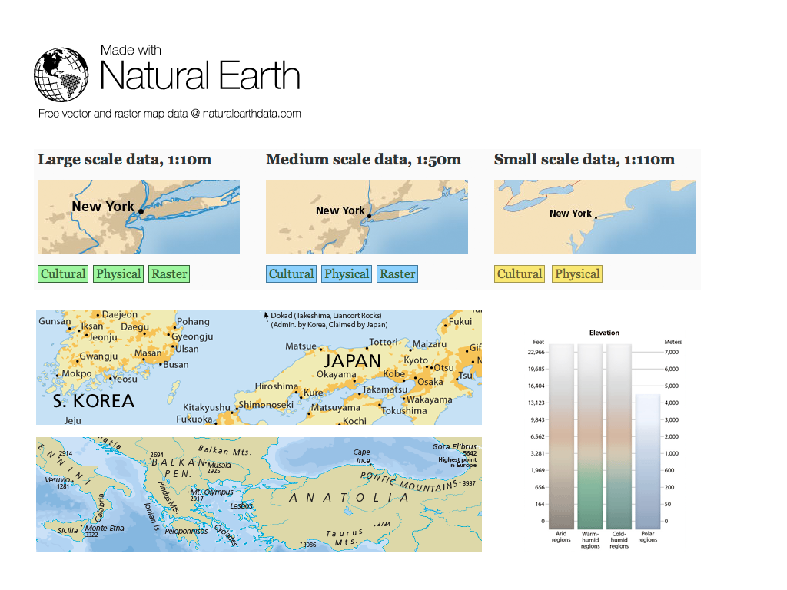

Naturlig jord¶
Kartdata¶
Natural Earth erbjuder kartografer en standardlösning för att skapa småskaliga världs-, region- och landskartor i skalorna 1:10-, 1:50- och 1:110 miljoner. Både politiska (administrativa) och fysiska (naturliga) funktioner ingår och vektorfunktioner anpassas perfekt till inkluderade rasterdata.
Natural Earth löser det vanliga problemet som många kartografer står inför: att hitta vektordata för att göra småskaliga kartor av publikationskvalitet med lämplig detaljnivå för de kartor de gör.
{kind=link}
Kärnfunktioner¶
Vektorfunktioner inkluderar namn och andra attribut
Stora polygoner delas upp för effektivare datahantering, t.ex. batymetriska lager.
Projektionsvänliga vektorer matchar exakt vid 180 graders longitud. Linjerna innehåller tillräckligt många datapunkter för en smidig böjning i koniska projektioner, men inte så många att datorns bearbetningshastighet blir lidande.
Rasterdata innehåller gråskaleskuggad relief och korsblandade hypsometriska nyanser som härrör från de senaste höjddata från NASA SRTM Plus och är skräddarsydda för att registreras med Natural Earth Vector.
Optimerad för användning i webbkartor, t.ex. Google eller Yahoo, med inbyggda skalattribut för att styra funktioner som ska visas på olika zoomnivåer.
Datauppsättningar¶
- Teman för kulturella vektordata:
Inkluderar länder, omtvistade områden, stater och provinser (1:a ordningens administrativa indelningar) och befolkade platser (städer). Vägar, järnvägar, urbana polygoner, parker och skyddade områden, nationsgrupper i Stilla havet och indikatorer för vattengränser kompletterar det kulturella utbudet.
- Fysiska vektordata Teman:
Inkludera kustlinje, land, hav, mindre öar, rev, fysiska regionfunktioner och punkter, floder, sjöar, glaciärområden, antarktiska ishyllor, batymetri, geografiska linjer och gratiklar.
- Teman för rasterdata:
Skuggad relief i gråskala, korsblandade hypsometriska färgtoner, satellitbaserad data om marktäcke, idealiserad världsmiljö, havsbotten och batymetri. Valfritt inbakat innehåll inkluderar: marktäcke, skuggad relief, havsvatten och avrinningsvägar med sjöar.
Detaljer¶
Webbplats: https://www.naturalearthdata.com/
Licens: Ingen, uppgifterna är offentliga.
Dataversion: 2.0
Dataformat: SHP och TIF+TFW
Spatialt koordinatsystem: WGS84.